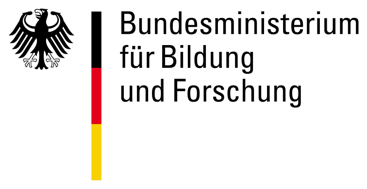
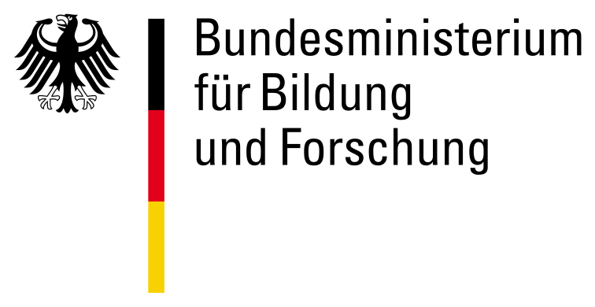

Joint Master's Program in Informatics
The Kyrgyz-German Faculty of Applied Informatics announces a recruitment for a joint master's program in cooperation with KSUSTA, MU Ala-Too and the Western Saxon University of Applied Sciences Zwickau in the following profiles:
1. Designing of international software systems
This profile is based on the Master's Program in Informatics at the Western Saxon University of Applied Sciences Zwickau, with an emphasis on software development. The content is also adapted to the needs of local enterprises that work in large software development and have a high demand for software developers at the master's level. During the preparation of the curricula, discussions and negotiations were held with managers in the field of development and management of numerous companies and organizations. Language training and intercultural training can successfully work in international teams. Training is provided in English, German and Russian.
2. Entrepreneurship in the field of information technology
The profile is business-oriented, the purpose of which is to provide students with software products with commercial exploitation and associated organizational structures, as well as the necessary managerial skills. The content of the curriculum facilitates the transfer of knowledge and technology to the economy of Kyrgyzstan and the strengthening of the existing IT industry both nationally and internationally. This profile focuses on the technical basics of software development, business components for the exploitation of inventions, intercultural aspects and language training. Practical modules of the 2nd and 3rd semesters will allow the graduates to successfully create and implement new projects within the existing enterprise. Training is provided in English, German and Russian.
Normative term of study:
Master's degree - 3 years.
UNIVERSITY OVERVIEW
Founded in 1897, Westsächsische Hochschule Zwickau (Zwickau University of Applied Sciences) is a non-profit public higher education institution located in the large town of Zwickau, Saxony. Officially accredited and/or recognized by the Sächsisches Staatsministerium für Wissenschaft und Kunst (Saxon State Ministry of Science and the Arts). WHZ offers courses and programs leading to officially recognized higher education degrees such as bachelor degrees in several areas of study. International students are welcome to apply for enrollment.
 

With Support DAAD
The German Academic Exchange Service (DAAD) is a joint institution of German universities and the largest organization supporting international cooperation of universities. the main goal of DAAD is to support academic relations with foreign academic institutions, primarily through the exchange of students and scientists.